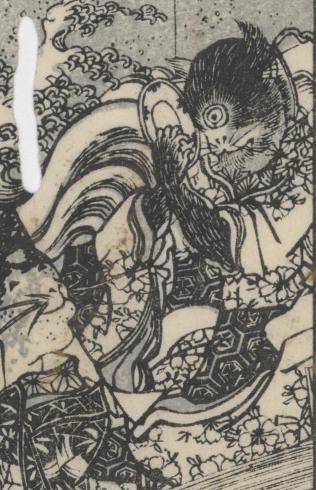

今川家不明ノ間の怪異。一つ目の黒猫。鼓を打っている。花柄と亀甲模様の小袖を着ている。
著作者：一陽齋豊國ほか／出典：親書誌：U426_nichibunken_0444：庭訓武藏鐙／日付：2017／資源識別子：U426_nichibunken_0444_0020_0000
Copyright (c)2010- International Research Center for Japanese Studies, Kyoto, Japan. All rights reserved.